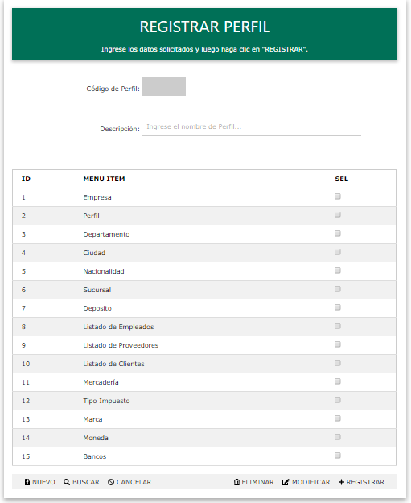

PERFIL
Objetivo:
Permitir agregar, eliminar o modificar PERFILES y PERMISOS.
Operatoria:
Se podrán ejecutar las siguientes opciones:
Nuevo Agregar un registro.
Buscar Permite buscar registros.
Cancelar Permite cancelar todas las operatorias
Eliminar Eliminar los datos de un registro
Modificar Modificar los datos de un registro.
Agregar Permite agregar un registro.
A continuación se detallan cada una de las funciones:
Nuevo:
Genera un código que será asignado a la descripción.
Buscar:
Permite buscar registro para modificar o eliminarlos posteriormente.
Cancelar:
Limpia todos los registros.
Eliminar:
Previa selección en el buscador, se cargan los campos, una vez echo eso se podrá eliminar dicho registro al presionar el boton Modificar emite un mensaje de confirmación.
Modificar:
Previa selección en el buscador, se cargan los campos, una vez echo eso se podrá actualizar o modificar dicho registro al presionar el boton Modificar emite un mensaje de confirmación.
Registrar:
Permite ingresar a la Base de Datos los registros cargados.

Created with the Personal Edition of HelpNDoc: Easily create Help documents